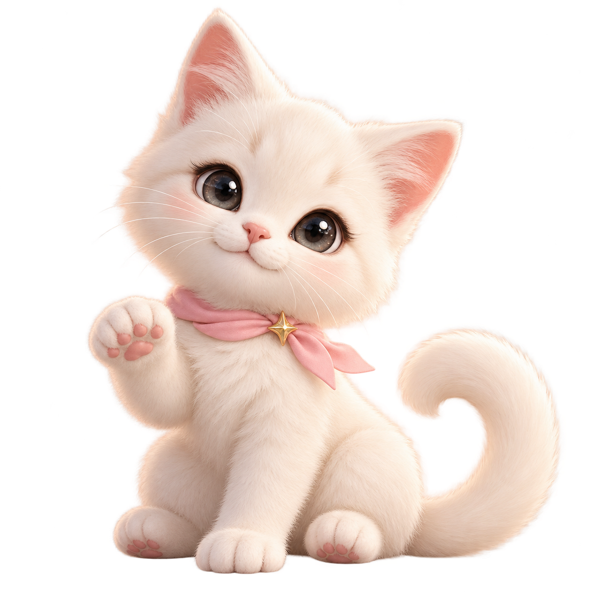

<!doctype html>
<html lang="zh-CN">
<meta charset="utf-8"><meta name="viewport" content="width=device-width,initial-scale=1">
<title>奶喵 · 星光陪伴｜2D 原画动效</title>
<style>
[hidden]{display:none!important}:root{color-scheme:light dark;font-family:system-ui,sans-serif;background:#faf5f3;color:#392f41}body{margin:0;min-height:100vh;display:grid;place-items:center}main{width:min(92vw,680px);padding:28px 0}h1{font-size:22px;font-weight:650;margin:0 0 8px}p{font-size:14px;line-height:1.7;opacity:.7;margin:0 0 16px}.stage{border-radius:28px;overflow:hidden;box-shadow:0 18px 65px #6e547417;background:#fbf6f4}canvas,.fallback{width:100%;height:auto;display:block}canvas{display:none}nav{display:flex;gap:10px;margin-top:16px;flex-wrap:wrap}button{font:inherit;border:1px solid #aa8f9b44;padding:10px 18px;border-radius:999px;background:#fff8;color:#49364d;cursor:pointer}button:focus-visible{outline:3px solid #c87898;outline-offset:3px}body.dark{background:#101526;color:#f3ecf4}.dark button{background:#242c43;color:#fff}.dark .stage{box-shadow:0 18px 65px #0004}small{display:block;margin-top:12px;font-size:12px;opacity:.6;line-height:1.7}
</style>
<main><h1>奶喵 · 星光陪伴</h1><p>保持原画形象的平面微动效。周围星光轻轻流动，猫咪保持原来的脸型、毛发与姿势。</p>
<div class="stage"><canvas id="stage" width="640" height="640" aria-hidden="true"></canvas></div>
<nav><button id="play" type="button">暂停动效</button><button id="theme" type="button">切换深色</button></nav>
<small>类型：原画图层动效（motion-poster）。没有新增眨眼、挥爪或其他逐帧肢体动作。尊重系统的减少动态设置。</small></main>
<script>
const canvas=document.getElementById('stage'),ctx=canvas.getContext('2d',{alpha:true});
const art=new Image();art.src='../illustrations/mewling_master.png';
const reduced=matchMedia('(prefers-reduced-motion: reduce)');
let mode='light',paused=reduced.matches,time=0,last=0,ready=false,visible=true;
const TAU=Math.PI*2,DURATION=6;
const stars=[{x:.16,y:.27,r:8.2,p:.10,c:'pink'},{x:.83,y:.17,r:5.7,p:.47,c:'gold'},{x:.88,y:.47,r:7.0,p:.78,c:'pink'},{x:.12,y:.58,r:4.7,p:.63,c:'gold'},{x:.73,y:.10,r:3.2,p:.26,c:'gold'}];
function star(x,y,r,alpha,color){ctx.save();ctx.translate(x,y);ctx.globalAlpha=alpha;ctx.fillStyle=color;ctx.beginPath();ctx.moveTo(0,-r);ctx.quadraticCurveTo(r*.18,-r*.18,r,0);ctx.quadraticCurveTo(r*.18,r*.18,0,r);ctx.quadraticCurveTo(-r*.18,r*.18,-r,0);ctx.quadraticCurveTo(-r*.18,-r*.18,0,-r);ctx.fill();ctx.restore()}
function draw(t,theme=mode){
 const W=canvas.width,H=canvas.height,q=TAU*(t%DURATION)/DURATION,dark=theme==='dark';
 ctx.clearRect(0,0,W,H);ctx.save();ctx.scale(W/640,H/640);
 ctx.fillStyle=dark?'#11182b':'#fbf7f5';ctx.fillRect(0,0,640,640);
 const glow=ctx.createRadialGradient(320,300,30,320,310,340);glow.addColorStop(0,dark?'#28314a':'#fffdfb');glow.addColorStop(1,dark?'#11182b':'#f7ecef');ctx.fillStyle=glow;ctx.fillRect(0,0,640,640);
 // A quiet backdrop and ground shadow; no new character pixels are painted.
 ctx.strokeStyle=dark?'#d9bdd514':'#d4a3b91f';ctx.lineWidth=1;ctx.beginPath();ctx.ellipse(320,322,231,243,-.12,0,TAU);ctx.stroke();
 const sw=1+.018*Math.cos(q);ctx.save();ctx.translate(324,595);ctx.scale(sw,1);const shadow=ctx.createRadialGradient(0,0,10,0,0,172);shadow.addColorStop(0,dark?'#03071360':'#9e778328');shadow.addColorStop(1,dark?'#03071300':'#9e778300');ctx.fillStyle=shadow;ctx.scale(1,.15);ctx.beginPath();ctx.arc(0,0,172,0,TAU);ctx.fill();ctx.restore();
 // Only a rigid layer transform: no face/body deformation or invented pose.
 ctx.save();ctx.translate(320,604-2.2*Math.sin(q));ctx.rotate(.0045*Math.sin(q));ctx.drawImage(art,-282,-566,564,564);ctx.restore();
 for(const s of stars){const phase=q+TAU*s.p,a=.34+.25*(.5+.5*Math.sin(phase)),dy=3.5*Math.sin(phase);star(s.x*640,s.y*640+dy,s.r*(.94+.06*Math.cos(phase)),a,s.c==='pink'?(dark?'#efb7d0':'#dc91b0'):(dark?'#e6cd94':'#cfa668'))}
 for(let i=0;i<6;i++){const p=q+TAU*i/6,x=111+i*80+2*Math.sin(p),y=77+(i%3)*178+3*Math.cos(p);ctx.globalAlpha=.15+.12*(1+Math.sin(p))/2;ctx.fillStyle=dark?'#ead6c3':'#b792a6';ctx.beginPath();ctx.arc(x,y,1.35,0,TAU);ctx.fill()}
 ctx.globalAlpha=1;ctx.restore();
}
function sync(){document.getElementById('play').textContent=paused?'播放动效':'暂停动效';document.getElementById('play').setAttribute('aria-pressed',String(!paused));document.getElementById('theme').textContent=mode==='light'?'切换深色':'切换浅色';document.body.classList.toggle('dark',mode==='dark')}
function tick(now){const active=!paused&&!document.hidden&&visible;if(last&&active)time+=(now-last)/1000;last=now;if(ready&&active)draw(time);requestAnimationFrame(tick)}
document.getElementById('play').onclick=()=>{paused=!paused;sync()};document.getElementById('theme').onclick=()=>{mode=mode==='light'?'dark':'light';sync();draw(time)};
reduced.addEventListener('change',e=>{if(e.matches){paused=true;time=0;if(ready)draw(0)}sync()});document.addEventListener('visibilitychange',()=>last=0);
new IntersectionObserver(entries=>{visible=entries[0]?.isIntersecting!==false;last=0}).observe(canvas);
window.renderFrame=(t,theme='light')=>{paused=true;mode=theme;time=t;sync();draw(t,theme);return canvas.toDataURL('image/png')};
window.animationSpec={kind:'motion-poster',durationSeconds:6,source:'illustrations/mewling_master.png',canvas:[640,640],characterDeformation:false,characterFrameAnimation:false};
art.decode().then(()=>{ready=true;document.querySelector('.fallback').hidden=true;canvas.style.display='block';draw(0);sync();window.animationReady=true;requestAnimationFrame(tick)}).catch(()=>{document.getElementById('play').disabled=true});
</script></html>
